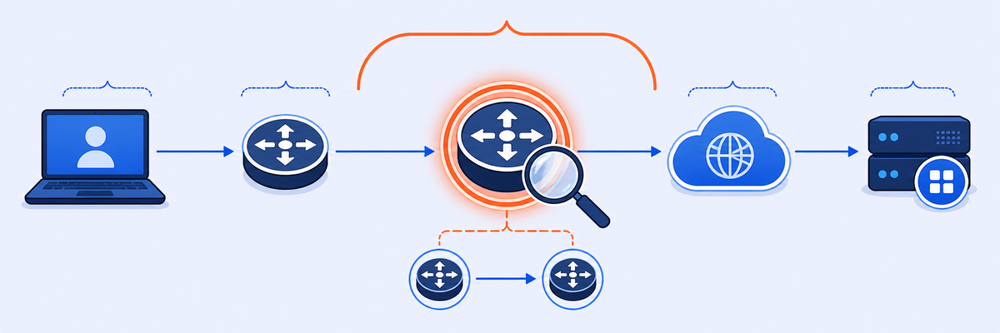

Lab 5: Troubleshooting Slow Network Router (Hop)
Scenario: Quincy Martin (Device: QUINCY-PC) reports very poor experience accessing SaaS apps, with the issue appearing randomly and sometimes self-resolving. Use ZDX to identify the exact network hop causing the latency.

When both DNS Resolve Time and Server Response Time increase simultaneously, the bottleneck is not DNS or the application server — it’s somewhere on the shared network path. Cloud Path + Hop View turns that insight into a specific IP address.
- In Lab 4, only DNS Resolve Time increased. In this lab, both DNS and Server Response Time increase. What does this difference in the PFT breakdown tell you about where the problem is?
- The Hop View shows 496ms between 10.1.2.1 (gateway) and 10.0.0.254 (router). What are two possible explanations for high latency on this single hop?
- ZDX Score Comparison confirms the issue. If you were writing a ticket to the network team, what three pieces of data from ZDX would you include to make the ticket actionable?
Task 5.1: Confirm Sporadic SaaS Application Performance
1 Find Quincy Martin and Verify the Pattern
- Use User Search to find
Quincy Martin. - Set the time range to 48 Hours (or a Custom range covering the complaint period).
- Select a SaaS application (e.g. ServiceNow) and view the ZDX Score Over Time graph.
- Confirm that the score oscillates between Good and Poor — matching the user’s report of sporadic issues.
Task 5.2: Analyze High Page Fetch Time
2 Identify the Latency Pattern
- Scroll to the Web Probe Metrics section.
- Examine the Page Fetch Time graph for periods when it exceeds the PFT Baseline.
- Note that both Server Response Time and DNS Resolve Time increase simultaneously when the Page Fetch Time is high.
Note: Both DNS and Server Response Time increase together — this indicates an overall end-to-end latency increase, not a DNS-specific or server-specific problem. The bottleneck is likely on the network path itself.
Task 5.3: Identify High Latency Cloud Path Link
3 Locate the Bottleneck Link
- Scroll down to the Cloud Path section.
- Select a point on the graph when End-End latency is high.
- Examine the latency metrics for each leg:
- Client → Egress
- ZIA Public Service Edge → Application
- End-End total
Result: Client-Egress latency is 496ms out of a total End-End latency of 551ms — the local network path from device to internet egress is responsible for 90% of the total delay.
Task 5.4: Analyze High Hop Latency
4 Pinpoint the Specific Router Hop
- Scroll to the Hop View below the Cloud Path graph.
- Locate the high-latency link (shown in orange).
- Click the magnifying glass icon on the high-latency hop to expand the view.
- Note the IP addresses of the two endpoints of the high-latency link.
Result: The 496ms latency is isolated to the hop between the Client Gateway at 10.1.2.1 and the next router at 10.0.0.254. This is a specific network segment, not the device itself.
Task 5.5: Confirm Key Differences with ZDX Score Comparison
5 Use Score Comparison to Validate the Finding
- Scroll back to the ZDX Score Over Time graph.
- Click a point with a Poor score and select Compare to › Last known good score.
- In the Key Differences table, confirm that Client-Egress Latency is significantly higher in the Poor period.
- Click View Detailed Cloud Path to see side-by-side Hop View for the Analyzed Point and Comparison Point.
Result: The Key Differences table confirms Client-Egress Latency as 504ms (Poor) vs. 1ms (Good). The detailed Cloud Path comparison shows the specific hop where latency increased.